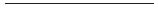

2. BÖLÜM

İnsanların hayatını değiştirmekten nefret ediyordum. Evet ediyordum. Bunu kendi kendime kaç kere tekrarladığımı unuttum. Değiştirmekten daha kötüsü, sona erdirmekti. Bir yolla sona ermesine neden olmaktı. Bir sözle, bir çözümlemeyle, ne bileyim bir tenkan’la.
İnsanların hayatlarını değiştirmeyi engellemenin en kestirme yolu uyumaktı. Eve gidip uyudum. Ne saate baktım, ne televizyona. Kapıdan girer girmez üstümdekileri sağa sola fırlatıp yatağa attım kendimi. Başkası uyuyamazdı belki ama ben uyudum.
Ne üstüme doğru gelen sivri bir kılıç gördüm rüyamda, ne Marilyn Monroe’yu. Düpedüz uyudum. Uzun uzun uyudum.
Yukarıdaki oğlanın müzik setinden gelen saçma sapan seslerle uyanıncaya kadar uyudum. Gözümü açınca acıktığımı anladım. Don gömlek mutfağa gidip biraz bayat ekmek ile üstünü açık bıraktığım için kurumuş peyniri buldum. Mutfaktaki küçük masada, formikanın üzerindeki çizikleri saya saya yedim yemeğimi.
Sonra gidip yeniden uyudum.
Kalktım, çişe gittim. Sonra dönüp yine uyudum.
Telefonun sesiyle uyandım.
Açmadım.
Telesekreter devreye girdi.
Gözlerim tavana takılı dinledim mesaj bırakan kadının sesini. Titrek bir sesi vardı, sonlara doğru ağlamaya başladı. Uyuşturucuya alışmış oğlunun nerede olduğunu bulup kötü arkadaşlarından kurtarırsam, evimin bir yıllık kirasına eşit bir parayı vaat etti telesekretere.
Uykum kalmamıştı artık, ama yerimden kıpırdamadım.
Örtüyü attım üstümden. Kollarım iki yana açık, ellerim tavana dönük, gözlerim kapalı yattım. Aklıma gelen tek şey derin derin nefes almaktı, onu yaptım. Başım dönünceye kadar doldurdum odanın bayat havasını ciğerlerime. Gözlerimi açmadım. Bulutlardan sıyrılıp Zürih’e doğru alçalmaya başlarken bir 747’nin kokpitinden dışarı baktığımda gördüklerimi hatırlamaya çalıştım, başaramadım.
Telefon yeniden çaldı. Yeniden açmadım. Telesekreter devreye girince kapadı arayan.
Bu kez kalktım. Üstüme bir şeyler geçirip bir kahve yaptım kendime. Pencereden baktım. İnsanların evlerine dönmeye başladıkları saatler kadar karanlıktı dışarısı. Karnım yeniden acıkmaya başlamıştı, buzdolabımın sefaletini bildiğim için mutfağa gitme zahmetine katlanmadım, telefonla yumurtasız bir kıymalı pide ve iki ayran ısmarladım kendime.
Televizyonu açtım. Fashion TV’ye getirip sesini kıstım. Kızlar durmadan yürüdüler.
Telefon çaldı. Açmadım.
Telesekreter devreye girince reklamcı arkadaşımın öfkeli sesini duydum.
“Açsana lan, evdesin biliyorum, demin meşgul çaldı telefonun.”
Açmadım. Kızlar durup dinlenmeden yürüyorlardı. Yerimden bile kıpırdamadım.
“Oğlum aç telefonu, iki satır konuşalım.”
Açmadım.
Açıp bir konuşmaya başlarsam bir daha susamam diye düşündüm.
“Tamam, kabul, pes. Keyfin yerine gelince ara beni. Tamam mı? Ara mutlaka. Bak aramazsan ilanını kestiririm ama.”
Kestirirsen kestir dedim içimden.
Güzel bir ilan hazırlatmıştı Hürriyet gazetesinin seri ilanlar sayfasına. Onu ilk tanıdığımda kendisi için yaptığım küçük bir işin hatırına okkalı bir indirimle yayımlatıyor, ben oralı olmazsam o indirimli faturanın bile üstüne düşmüyordu. İlanım bilumum “araştırma ve takip” ilanlarının arasında anında öne çıkıyor, telefonumun beni işsiz bırakmayacak kadar çalmasına yarıyordu. Tasarımını taklit eden bir iki meslektaşım çıkmıştı hatta.
Kestirirsen kestir dedim içimden. İşime gelir.
Başkalarının hayatını değiştirmek bu kadar acı veriyorsa, iyisi mi ben kendi hayatımı değiştireyim diye düşündüm.
Kızlar bitip tükenmeyen bir enerji, suratlarında bitip tükenmeyen bir donukluk ve bitip tükenmeyen saçma giysiler içinde yürüyüp duruyorlardı bir aşağı bir yukarı.
Haberleri dinlemeye cesaretim yoktu.
Biraz sonra kapı çaldı. Kıymalı, yumurtasız pidemi PizzaHut’ın dağıtımcılarına özenerek giyinmiş bir kebapçı çırağından teslim aldım. Uzattığım paranın üstünü beklemeden kapıyı kapattım yüzüne. Yağları dışa vurmuş paketi masanın üstüne daha bırakamadan kapı yeniden çaldı.
“Tamamdır!” diye kükredim olduğum yerden.
Kapı bir daha çalmadı.
Paketi açtım. Piştikten epey sonra yeniden fırına sokulmuşa benzeyen çok yağlı, az kıymalı pidemi hızla yedim. Ellerimi yıkamadan gidip yeniden yattım. Televizyon açık kaldı, kızlar yürümeye ben yokken de devam ettiler.
Bu sefer daha iyi uyudum. Telefon falan da çalmadı.
Kalktığımda kendimi daha iyi hissediyordum. Televizyonu haber yayınlayan bir kanala getirmedim yine de. Bakkalın çırağı ekmeğimle gazetemi getirmiş mi diye kapının dışına bakmaya da zahmet etmedim. Üst üste iki kahve ve sigaradan sonra yerine geldi kafam. Kahvelerimi hâlâ yürümeye devam eden kızları seyrederek içtim.
Yeniden uyuyacak halim yoktu. Yapacak işim de.
Bilgisayarın başına geçtim.
Biraz uçtum.
Bilgisayardaki uçuş simülatörleri gerçek uçuşların yerini tutmaz. Tamam, gerçeğe çok yakındırlar, bir oyundan farklı olarak gerçek uçak tepkilerine yakın tepkiler verirler, “realism” modunu maksimumda tutarsanız havada başınıza gelebilecek her şey başınıza gelebilir ama yine de gerçek uçuşların yerini tutmaz. Altınızdaki koltuk tıngırdamaz örneğin, güneş gözünüzü yakmaz, alnınızda zaman zaman beliriveren terler gerçek değildir, kokpitteki elektrik kokusunu almazsınız, göstergeler ne kadar hızla hareket ederse etsin her an mutfağa gidip yeni bir kahve koyabilirsiniz kendinize.
Bazı uçuşlarda tekerlekler yere değdiğinde arka taraftan yükselen alkışları da koymamışlardır programa.
Elinizde ne varsa onunla yetinirsiniz.
Bir klavye, bir monitör.
Elimden alınan gerçek uçakların yerine, bir klavye ve bir monitörle yetinip uçtum. İptal edilen ticari pilot sertifikamın uçurmama izin verdiği uçaklara elimi bilgisayarda da süremiyordum nedense, Cessna 182RG ile yetinip, yalnızca görerek uçuş koşullarında Meigs Havaalanı ile O’Hare International arasında gidip geldim. İki iniş denememin birinde çakıldı uçağım.
Parçaladığınız uçakların hesabını soran müfettişler de yoktur uçuş simülatörlerinde.
Allahtan yoktur.
Telefon çaldığında kendime değil, gölden karaya doğru esen rüzgâra öfkeliydim. Cessna’mı 030 “heading”de terk edip açtım.
“Nihayet!” dedi reklamcı arkadaşım.
Telefona homurdandım.
“Neyin var senin?” dedi sonra.
Bir kere daha homurdandım.
“Geliyorsun çalışmaya değil mi?” dedi.
“Geliyorum,” dedim kısa kessin diye.
“Sonra gider bir şeyler yeriz,” dedi.
Yeniden homurdandım.
“Anladık, havanda değilsin,” dedi reklamcı arkadaşım. “Ama çalışmaya gel lütfen. Bugün yarın sınavım var, seninle çalışalım.”
“Çalışalım,” dedim.
“Görüşürüz.”
Telefonu kapatınca eve geldiğimden beri ilk kez saate baktım. Sonra pencereden dışarıya. Sakin bir akşam vardı dışarıda. Pencerenin önünde derin derin nefesler aldım. Gidip hiç misafir ağırlamayan misafir odasının kapısının üstüne havalanması için astığım gi’mi toparladım. Bir haftadır havalanıyordu orada. Artık bir de yıkansa iyi olurdu.
Demek bir derece daha alacaktı reklamcı arkadaşım. Aikidoya birlikte başladığımızda tanışmıştık, ama o işte gösterdiği disiplini dojo’da da göstermiş, kaytarmadığı çalışmaların semeresini, hevesle girdiği ilk sınavda toplayarak önüme geçmişti benim. Artık çalışma başlangıcı ve bitişindeki seremoni dizilişimizde onunla aramda insanlar oluyordu.
Sınavına yardımcı olup benden biraz daha uzaklaşacağına sevindim.
Evden çıkmadan önce bilgisayarı kapamadım. Elektrik kesilmezse Cessna’mın 030 “heading”de nerelere kadar gideceğini merak ediyordum.
Salonunda çalıştığımız, bir zamanlar genç bir kız ile hırslı bir adamın hayatını karıştırmama sahne olan, “seçkin okulun mezunlar derneği”ne varıncaya kadar otomobilimin radyosunu açmadım.
Sıkı bir çalışma oldu.
Reklamcı arkadaşımın, sensei’nin ve öteki arkadaşların “Nerelerdesin?” sorularını asık bir suratla cevapladım çalışmadan önce. Isınma sırasında başka saatlerde aynı salonda aerobik yapan kadınların işine yarayan aynalara ben hiç bakmadım. Sensei, çalışmanın başında reklamcı arkadaşımla beni bir köşeye ayırdı. Sınavda istenecek hareketleri bir kez daha sıralayıp bizi birbirimizi mindere fırlatmamız için baş başa bıraktı.
En çok da yeni başlayan kızla eşleşmek zorunda kalmayacağıma sevindim.
Beyaz gi’leriyle teknikleri bilerek çalışanların arasında, doğal olarak acemi hareketleri ve en çok da saçlarının rengine uygun, siyah, dar eşofmanlarıyla dikkat çekiyordu ister istemez yeni başlayan kız. Yeni başlayanlar genellikle bir iki çalışmaya gelip, öne ve arkaya taklalarla başlayan, savaş sporuna benzemeyen bu savaş sporunun danışıklı düşüşlerine ısınmadan gi yatırımı yapmazlar. Eşofmanlarıyla, basketbol ve futbol formalarıyla olduklarından daha acemi görünmelerine içten içe sıkılıp, her düşürülüşlerinde bir kez daha test ederler devam edip etmeyeceklerini. Devama karar verenler, çalışma sonrası duşlarını yaptıktan sonra yarı utangaç sorarlar bu beyaz giysilerin nereden alındıklarını. İşi bilenler, “Ha... ona gi deriz...” der ve Sirkeci’deki postanenin oralardaki spor mağazalarının yerini tarif ederler.
Yeni başlayan kız yakın zamanlarda gi’ye geçecek miydi bilmiyordum, ama bu ilk çalışma için bu kadar dar bir eşofman seçtiğine eminim çoktan pişman olmuştu. Daha çok modern bale gösterilerindeki taytlara benzeyen, vücudunun dikkat çekici bütün kıvrımlarının altını bir kez daha çizen bir şeydi üstündeki. Siyah olması, aralıksız düşüp kalkan o kadar beyazlı arasında daha da dikkat çekmesine neden oluyordu. Her düşüşünde giysinin üst parçasını aşağılara doğru çekiştiriyor, gereğinden çok şey göstermemenin azmiyle yeniden düşüyordu.
Yine de bir zarafet vardı kızın düşüşlerinde, gözümün ucuyla gördüğüm kadarıyla. Gövdesine yabancı değildi. Hocanın söylediklerini, bir işi kendinden iyi bilenlerle yaparken, direktifleri direnmeden yerine getirmenin önemini bilen birisi gibi dinliyordu. Bu kız devam edecek dedim kendi kendime.
Biz de devam ettik. Teknikleri hiç ara vermeden, durup soluklanmadan, bir omote bir ura uyguladık durduk. Bu tekniklerle ben sınava girsem, ben bile geçerdim belki bir üst dereceye. Ben de iyiydim, reklamcı arkadaşım da. İş hayatı, müşteri yalakalığıyla geçen birisi için fazla iyiydi hatta. İş hayatı müşterilerinin hayatını değiştirmekle sonuçlanan birisi için fazla iyiydim. Aynalara hiç ama hiç bakmadan birbirimizi düşürüp durduk mindere.
“Çok sertsin bugün,” dedi reklamcı arkadaşım.
“İşine bak,” dedim ona. “Sınava girecek olan sensin.”
“Seni de görürüz ama,” dedi.
Cevap vermedim.
Düşünerek değil, kendiliğinden uyguluyorduk teknikleri. Akılla değil, içgüdüyle bükülüyordu eklemlerimiz. Sensei’nin istediği gibi. Kitaplarda yazdığı gibi. Pencerenin önünde uyguladığım gibi. Saldırı var! Savun! Saldır! Savunsun!
Sensei’nin çalışmanın bittiğini haber vermek için ellerini çırptığını ikinci çırpışında algıladık. Dizüstü çöktük mindere. Sıkı çalışan her çalışmadan sonraki gibi bitmiş tükenmiş, ama vücudumuzdaki yedek gücün farkında soluklandık.
Ekibin geri kalanı bize bakıyordu. Yeni başlayan kız da reklamcı arkadaşıma.
Diğerleri birbirlerini düşürmeye başladı. Biz kenarda soluklanmaya devam ettik. Ben hiçbir şey düşünmüyordum. Ellerim dizlerimde önüme bakıp, soluğumun temposunun yavaşlamasını izledim yalnızca. Reklamcı arkadaşım omzuma vurup, sınava ilişkin bir iki ayrıntıyı sormaya gitti. Yerimden kıpırdamamalıydım. Kıpırdarsam benim ne zaman sınava gireceğim gündeme gelirdi.
O çalışmanın sonunda ben düşmedim. Yeteri kadar düşmüştüm bugünlerde.
Soyunma odasında sessizliğimi korudum. Çıplak erkekler arasında yapılan esprilere gülmedim. Ağır ağır, sanki giyindikten sonra yapacak hiçbir işim yokmuş gibi giyindim. Yoktu da zaten. Benden önce giyinen ekibin çıkarken yukarıda bir bira içme önerisini reddettim. Çok kısa ve çok keskin sözcüklerle reddettiğim için, önerilerini yinelemeden çekip gittiler. Reklamcı arkadaşım da bana yüz vermedi. Buna alınmadım. Terden sırılsıklam gi’mi ve çamaşırlarımı tıkıştırdığım çantamı omzuma atıp, halı sahada futbol oynamaya hazırlanan bir iki kişiye âdet yerini bulsun diye iyi akşamlar dedikten sonra soyunma odasını terk ettim.
Şimdi ne yapacaksın diye sordum kendi kendime. Şimdi ne yapacaksın? Zihnimin gözünde kendimi Fashion TV seyrederken ya da bilgisayarın başında göremiyordum. Akşam oturmasına gideceğim arkadaşım yoktu. Filmden önce kısa bir haber ve aktüalite filmleri gösterme âdeti çoktan terk edildiğine göre, belki sinemaya gidebilirdim.
Dışarı çıktığımda yerler ıslaktı. Gelgeç bir yağmur havayı temizlemiş, park yerindeki otomobillere, çevreyi aydınlatan bahçe lambalarının armağanı ışıltılar eklemişti.
Kocaman cepli kadife safari ceketimin cebinde anahtarlarımı arayarak otomobilime doğru yürürken arkamdan hızlı adım sesleri geldi. Dönüp bakmadım.
“Affedersiniz,” dedi ince, ama melodili bir ses. Durdum. Sonra döndüm.
Yeni başlayan kız.
Keyfim yerinde olsa bir ıslık çalardım. Böyle olurdu zamane genç kızları. Antrenmandan çıkıp diskoya giderlerdi. Uzun, siyah bir trençkot vardı üstünde. Önü iliklenmemişti. Fashion TV’deki kızların giydikleriyle yarışacak kısalıkta bir etek giymişti. İnce siyah çoraplar, bacaklarını içeride giydiği dar şeyden daha çok vurguluyordu. Beyaz gömleğinin üst iki düğmesi yerinde yoktu sanki. Gözlerinin rengini göremedim. İpi çekilince ağzı büzülen türden bir çanta vardı omzunda.
“Affedersiniz,” dedi yeniden. “Beni de alır mısınız?”
“Akmerkez’e kadar gideceğim,” dedim, hayal kırıklığına uğrar belki diye.
“Bana uyar,” dedi bir iki adım daha yaklaşarak. “Oralardan bir taksiye atlarım.”
“Buyrun,” dedim kapıyı açarken. Kendi kapımı. Çantamı arka koltuğa atıp içeri girdim. Yeni başlayan kız da aynısını yaptı.
Emniyet kemerimi takıp, otomobili çalıştırdım. Silecek koluna dokundum, ön camdaki yağmur artıklarını temizledim. Farları yaktım.
“Sigara içebilir miyim?” dedi yeni başlayan kız, kendi emniyet kemerini takmaya uğraşırken. Koltuğa oturunca eteği biraz daha yukarı sıyrılmıştı. Trençkotuyla örtmedi ama.
“Çalışmadan hemen sonra tavsiye edilmez,” dedim. “Ama bu arabada sigara yasak değil.”
Yanımıza doğru gelen otopark görevlisine para vermek için camı indirdim. Kaset koymaya ayrılmış bölmedeki kâğıt paralardan ikisini alıp verdim delikanlıya.
Yeni başlayan kız siyah trençkotunun cebinden bir paket Eve çıkardı. Küçükken lokomotiflere benzettiğim eski usul muhtar çakmağıyla yaktı sigarasını.
“Ne zamandır çalışıyorsunuz?” dedi bana ilk nefesini burnundan salarken.
“Epey oldu,” dedim. Cevabım çok mu uzun oldu diye düşündüm sonra.
Ağır ağır otoparktan çıktık.
Çalıştığımız “seçkin okulun mezunlar derneği”nin önündeki yol tekyönlüdür. Rumelihisarı’nın kulelerinden birinin yanından inen dar yol, daha darlaşarak kimileri restore edilmiş iki katlı evlerin arasından arkadaki çınar ağaçlı meydana ulaşır. Sokağın başındaki çukur çeşmenin çevresinde ancak bir iki otomobil koyacak kadar yer vardır.
Biz geçerken, sokağın başındaki çukur çeşmenin çevresindeki ancak bir iki otomobil koyacak kadar yerde duran koyu renkli Range Rover’ın farları yandı. Dar yoldan ilerlerken bir çift güçlü ışık belirdi dikiz aynamda.
“Siz özel dedektifmişsiniz...” dedi yeni başlayan kız.
“Kim söyledi?” dedim.
“Soyunma odasına bakan kadın.”
Bir cevap almak için bir soru sormak gerektiğini çoktandır bildiğimi belirtmedim. Çınarlı meydana geldiğimizde hızla ilerleyip soldan Hisarüstü’ne giden yola girdim. Dikiz aynamdaki ışıklar kaybolmadı.
Karanlık ama boş yolda hızımı biraz artırdım. Dikiz aynamdaki ışıklarla aramızdaki mesafe hiç artmadı ama.
“Ben tiyatrocuyum,” dedi yeni başlayan kız.
Sesimi çıkarmadım.
“Vücudumu daha iyi kullanmama yardım eder belki diye başladım aikidoya,” dedi sonra.
İyi dedim kendi kendime.
“Sizce yapabilir miyim?” diye sordu.
Bir yanıt vermem gerekiyordu.
“Elbette,” dedim.
Gözüm dikiz aynamdaydı. Range Rover’ın farlarında. Hisarüstü’nün anacaddesinde fazla trafik yoktu.
“Hocanın giydiği o siyah pantolon niye herkeste yok?” dedi.
“Ona hakama derler,” dedim. “Üst derecelerle ilgili bir tür statü göstergesi.”
Bu uzun cümlem onu heveslendirdi galiba sohbet için.
“Siyah kuşak falan gibi mi?”
“Evet,” dedim.
Range Rover, sağdaki fırının önünden hızla yola çıkıp aramıza giren kamyoneti solladı hemen.
“Sizin niye yok?” dedi yeni başlayan kız.
“Bunun için bir dizi sınava girmek lazım,” dedim. Ruhen de yeterli düzeye gelmek gerektiğinden bahsetmedim.
Sigarasını ağzına kadar dolu olan kül tablasında bir yer bulup bastırdı kız. Önündeki bir dizi sınavı düşünür gibiydi. Benimse gözlerim dikiz aynası ile yol arasında gidip geliyordu.
Hisarüstü’nü arkada bırakmış, üniversitenin kütüphanesinin önündeki banketle ayrılmış yoldan önceki ışıklara gelmiştik. Durum ortadaydı, ama arkamızdakilere bir şans daha vermeye karar verdim. Ayağımı gazdan kesip yeşil ışığın süresinin bitmesine katkıda bulundum. Yeşilin kırmızıya dönme anında tam ışıkların hizasındaydık. Durmak yerine hızlanarak devam ettim. Range Rover bir an tereddüt eder gibi oldu sanki, ama o da durmadı.
“Bir şey mi var?” dedi yeni başlayan kız.
“Birazdan söylerim,” dedim ağzımın içinden.
Kütüphanenin önünden hızla geçtim. Arkamdaki farların ışıklarıyla aramızdaki mesafe biraz artar gibi oldu. Üçlü kavşakta dönüş işareti vermeden sağa döndüm.
Kısa bir lastik cayırtısı duyuldu arkamızdan. İki saniye sonra artık tanıdık farlar yeniden dikiz aynamdaydı.
“Biri peşinde,” dedim.
“Emin misiniz?” dedi yeni başlayan kız geriye dönüp bakarak. Gözlerini kıstı arkamızdaki ışıklara doğru.
“İstersen durayım, o Range Rover’a bin,” dedim.
“Range Rover mı?” dedi. “Yanılmış olmayasınız? Gitti sanıyordum ben o salağı.”
Gerçekten şaşırmış gibiydi. Biraz da memnun.
“Hayır,” dedim. “Range Rover. Hisar’dan beri peşimizde.”
“Doğru,” dedi kendi kendine. “Ayhan’ın Audi’si olacak değil ya!” Bir kez daha dönüp geriye baktı.
Sormasam olurdu, belki de daha iyi olurdu, ama sordum.
“Ayhan kim?” dedim. “Salak kim?”
“Ayhan kendini sahibim zanneden biri,” dedi yeni başlayan kız. “Salak ise salak.”
Apartmanların arasından sola dönüp, kocaman bir U çizerek, futbol sahasının yanından geçtim, yeniden Etiler’e giden yola girdim. Dikiz aynamdaki ışıklarda bir değişiklik olmadı.
Huzurevinin önüne gelene kadar sustuk. Yeni başlayan kız kafasını önüne eğmiş, düşünüyordu. Bıraktım düşünsün.
Durakta yolcu indiren otobüsü biraz hızlanarak solladım. Otomobilin ani ivmelenmesiyle biraz geriye kaykıldı. Bu hareket, kararını vermesine yardımcı olmuş gibi kafasını kaldırıp yüzüme baktı yandan.
Sokak lambasının ışıklarının altında gözlerini görebildim. Onlar da siyahtı.
“Bana yardım eder misiniz?” dedi kararlı görünen bir sesle.
“Ne yapmamı istiyorsun?” dedim.
“Arkamızdakini ekebilirseniz, Levent’in oralarda bir yerlerde iner, kaybolurum ortalıktan.”
“Sonra ne olacak?”
Duvarlarında ünlülerin imzalı fotoğraflarının asılı olduğu kebapçının önüne gelmiştik.
“Bilmem,” dedi. “Bir çare bulurum herhalde.”
Kararımı bekler gibi yüzüme baktı.
Düşündüm. Hızla ve umutsuzca düşündüm. Benden istediği çok kolaydı. Önümüzde bir dolu kırmızı ışık, sapılacak bir dolu yan yol vardı. Ama bir kere yan yola saptığınızda artık geri dönülmediğini çok iyi biliyordum. Bir yol diğerine açılırdı hızla. Ve ben aynı hafta içinde, hemen hemen aynı yaşlarda bir başka kızın hayatını değiştirme olasılığından ürktüm. Yeni başlayan kızın adına değil, kendi adıma ürktüm. Bulaşma dedim kendi kendime.
Bir sürü banka şubesinin yan yana dizildiği meydanın başına gelmiştik.
“Kusura bakma,” dedim gözlerimi yoldan ayırmadan. “Etiler caddelerinde arabayla kovalamaca oynayamayacak kadar yaşlıyım ben.”
Meydandaki trafik ışıkları kırmızıya döndü. İçinde dört kadının oturduğu bir taksinin arkasında durdum. Kafamı çevirmedim.
“Anladım,” dedi yeni başlayan kız. “O zaman iyi geceler.”
Ani bir hareketle kapıyı açıp otomobilden indi. Bir an arkaya baktı, sonra kapıyı sert bir biçimde kapatıp, kaldırıma sıçradı. Sonra hiç duraklamadan koşmaya başladı. Sağdaki sokağa yöneldi, büfenin yanından köşeyi dönüp ortalıktan kayboldu.
Son gördüğüm düğmeleri iliklenmediği için koştukça iki yana savrulan siyah trençkotu oldu.
Ellerim direksiyonda kalakaldım.
Sonra arkamdan kornalar çalmaya başladı.
Ne yapacağıma karar veremeden öylece durdum. Kornalar daha da şiddetlendi. Yeşil yanalı epey olmuştu anlaşılan. Kornalar kararıma etkili oldu. Otomobili harekete geçirdim. Sağa sinyal vermeden, yeni başlayan kızın girdiği sokağa girdim. Sağa sola bakarak ağır ağır ilerledim. Görünürlerde kimse yoktu. Biraz ileride yol sağa, sola ve ileriye ayrılıyordu. Soldaki sokağın ışıkları yanmıyordu. Umutsuzca sola döndüm. Yine kimseler yoktu. Üstelik isteyen birisi sıra sıra park etmiş otomobillerin herhangi birisinin arkasında üç dört dakika çömelse peşindekileri atlattı demekti. Siyah bir trençkot da, karanlık bir gecede ortadan kaybolmak için çok kullanışlıydı.
Kendi kendime küfredip otomobili hızlandırdım. Girdiğim sokakta sola sağa kıvrılıp yeniden anacaddeye çıktım. Dikiz aynamda Range Rover’ın ışıkları falan da yoktu artık.
Direksiyona elimle bir tokat atıp, bir şeyler atıştırdıktan sonra, neyi gösteriyorlarsa hiç tartışmadan onu seyretmek için Alkent yönüne doğru ilerledim.